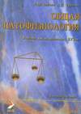
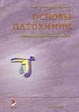
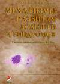
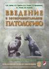
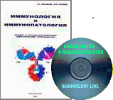

ВВЕДЕНИЕ
В ходе эволюции животные приобрели особую систему, способную создавать, архивировать и при необходимости воспроизводить адресные защитные программы, индивидуально подобранные по отношению к различным агентам. Эта система располагает сенсорными функциями, памятью о предыдущих сигналах и обучаемостью, в силу чего повторные ответы на тот же самый агент отличаются от начальных. Речь идёт об иммунной системе.
Даже у наиболее примитивных одноклеточных организмов существует специфическое реагирование, в виде адаптивной индукции синтеза ферментов, комплементарно взаимодействующих с субстратами-индукторами. У сложных многоклеточных организмов иммунная система, постоянно развиваясь и усложняясь в ходе эволюции, достигла своего совершенства у высших млекопитающих.
Прежде всего, обеспечивая генетическое своеобразие и постоянство клеток организма, иммунитет решает ряд приоритетных задач, необходимых для нормального функционирования органов, систем и всего организма в целом, а именно: поддержание нормальных здоровых молодых клеток за счет элиминации атипичных, стареющих и больных, уничтожение или торможение активности микроорганизмов, обслуживание репродукции на всех этапах и регуляция клеточных функций в составе единой нейро-эндокринно-иммунной системы, функционирующей на основе принципа комплементарных взаимодействий.
Учебно-методический комплекс
Данное интерактивное руководство базируется на тексте трехтомного учебника А.Ш. Зайчика и Л.П. Чурилова «Патофизиология»:
- Том 1. Общая патофизиология. Изд. 2-е, СПб : ЭлБи, 2001. — 624 с., илл.
- Том 2. Основы патохимии. Изд. 2-е, СПб : ЭлБи, 2001. — 688 с., илл.
- Том 3. Механизмы развития болезней и синдромов. Изд. 1-е, СПб : ЭлБи, 2002. — 507 с., илл.
и вместе с этим учебником и с практикумом по патологической физиологии:
- А.Ш. Зайчик, Л.П. Чурилов, В.И. Утехин, А.С. Фокин, Г.П. Ирошникова, И.В. Беляева. Введение в экспериментальную патологию. Практические занятия по патофизиологии для студентов-медиков. Изд. 1-е, СПб : ЭлБи – СПбГУ, 2003. — 380 с., илл.
входит в единый учебно-методический комплекс по патофизиологии.





|
|
|

|
|